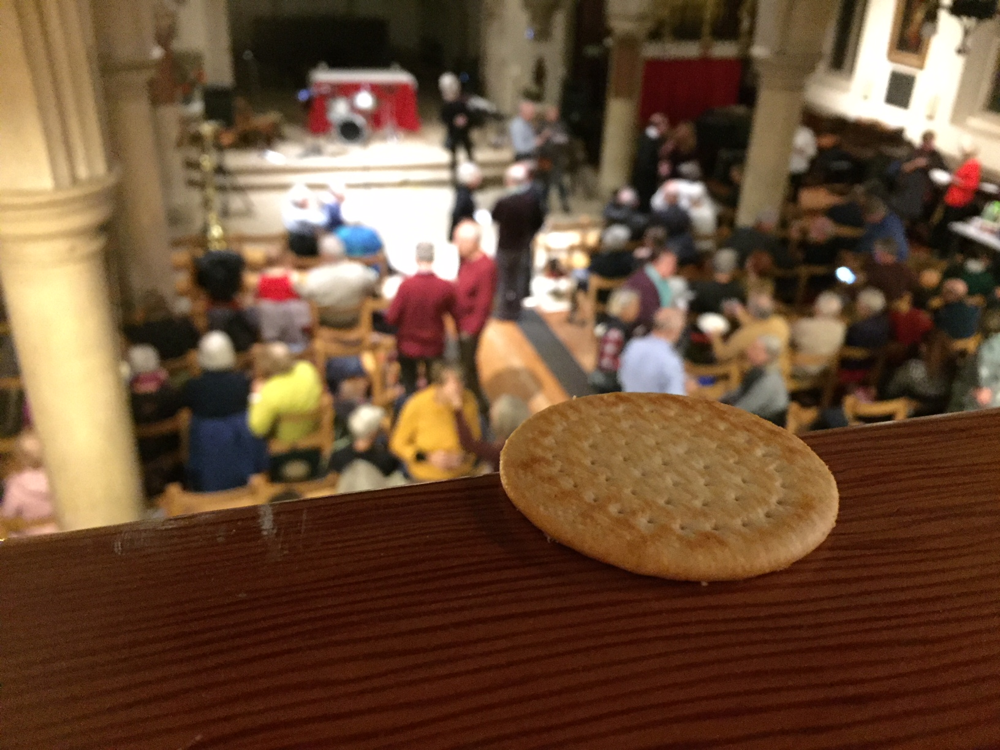

The Sailing Cracker
today
The Cracker continues to grow
You might see how the Cracker moves, even in its subtle ways. The Cracker struggles, toils, moves with and against the way. It pulses in order to find value.
And where does one find such value? Only the Cracker knows and sees all. There is no mystery here, no magic or witchcarft. This is the work of science at its finest. There is nothing wrong with the way you look at this, but simply the lack of that matters. After all, perception is consciousness.